Conventional wisdom suggests parameter efficient fine-tuning of foundation models as the
state-of-the-art method for transfer learning in
vision, replacing the rich literature of alternatives
such as meta-learning. In trying to harness the
best of both worlds, meta-tuning introduces a subsequent optimization stage of foundation models
but has so far only shown limited success and
crucially tends to underperform on out-of-distribution
(OOD) tasks. In this paper, we introduce Sparse
MetA-Tuning (SMAT), a method inspired by
sparse mixture-of-experts approaches and trained
to isolate subsets of pre-trained parameters automatically for meta-tuning on each task. SMAT
successfully overcomes OOD sensitivity and
delivers on the promise of enhancing the transfer
abilities of vision foundation models beyond
parameter-efficient finetuning. We establish new
state-of-the-art results on a challenging combination of Meta-Dataset augmented with additional
OOD tasks in both zero-shot and gradient-based
adaptation settings. In addition, we provide a
thorough analysis of the superiority of learned
over hand-designed sparsity patterns for sparse
expert methods and the pivotal importance of the
sparsity level in balancing between in-domain
and out-of-domain generalization.
Method
SMAT meta-learns a shared knowledge pool
consists of
sparse interpolated experts characterized by a common, learnable set of dense parameters
and distinct, learnable sets of gating masks
with sparsity constraints. To construct each task-specific model
for both meta-training and inference, (1) SMAT first combines experts via a weighted-sum with merging weights
generated by a meta-learned hypernetwork
based on the task's support set
. (2) The experts are then subsequently interpolated with the frozen pre-trained model
to enhance both in-distribution (ID) and out-of-distribution (OOD) generalization performance. Alongside (3) the query prediction loss
, (4) knowledge distillation with task-specific dense teachers
is introduced during meta-training to promote specialization and cooperation of the sparse interpolated experts, ensuring optimization success.
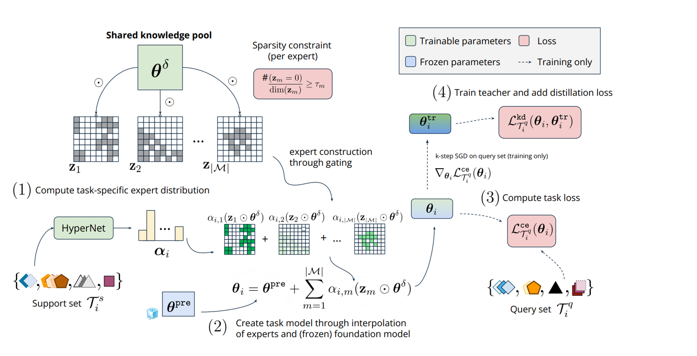
Experimental Results
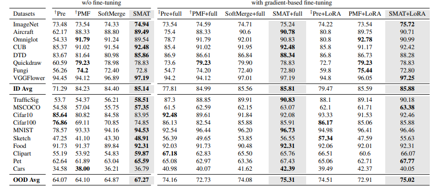
Few-shot testing performance:
We report the average in-distribution (ID) and out-of-distribution (OOD) few-shot testing performance of the meta-tuned models on the Meta-dataset benchmark augmented with additional OOD few-shot learning tasks. The results highlight that SMAT consistently achieves the best generalization performance among all methods across all evaluation settings, including direct inference without fine-tuning, gradient-based fine-tuning by fine-tuning the full model, and parameter-efficient fine-tuning using LoRA.
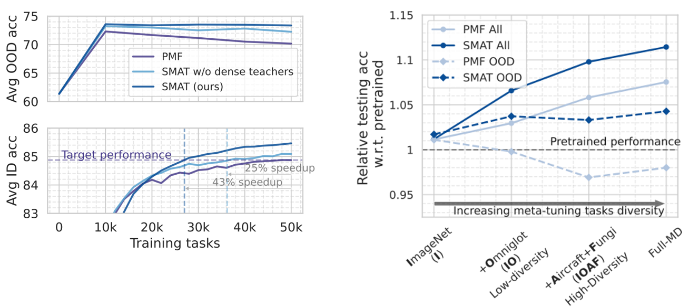
Learning speedup (Left): SMAT yields better ID results with an attractive learning speedup while achieves and maintains high OOD generalization performance.
Meta-tuning task diversities (Right): SMAT achieves both improved ID and OOD generalization performance over the baselines under all evaluated meta-tuning settings with various training task diversities.
Sparsity finds optimal ID vs OOD trade-offs (Left): The sparsity level of experts essentially constrols the realtive strength of interpoaltion between pre-trained model and the meta-trained experts, therefore, establishes a trade-off between ID and OOD performance, with an optimal point usually existing between the extremes.
Sparsity encourages specialization (Right): Higher sparsity in SMAT potentially induces better meta-gradient alignment during meta-tuning, indicating a sign of development for each expert into a highly specialized region of parameters.
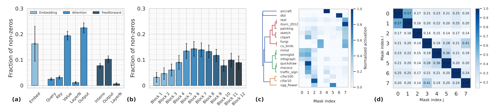
Meta-learned expert sparsity patterns (a-b,d): (a-b) Expert capacity (i.e., the number of non-zero parameters remaining after meta-tuning) grouped by (a) layer types, and (b) layer depth. (d) Overlap (of non-zero regions) between expert masks. The results indicate a noticeable deviation in meta-learned sparsity patterns among experts exists.
Implied task relationship (c): A dendrogram, produced based on expert selection scores, clearly shows hierarchical clustering according
to visual similarities between tasks.
SMAT Explained
Citation
@inproceedings{chen2024unleashing,
title={Unleashing the Power of Meta-tuning for Few-shot Generalization Through Sparse Interpolated Experts},
author={Shengzhuang Chen and Jihoon Tack and Yunqiao Yang and Yee Whye Teh and Jonathan Richard Schwarz and Ying Wei},
booktitle={Forty-first International Conference on Machine Learning},
year={2024},
url={https://openreview.net/forum?id=QhHMx51ir6}
}
Automatic Expert Discovery in LLM Upcycling via Sparse Interpolated Mixture-of-Experts
We present Sparse Interpolated Mixture-of-Experts (SIMoE) instruction-tuning, an end-to-end algorithm designed to fine-tune a dense
pre-trained Large Language Model (LLM) into
a MoE-style model that possesses capabilities in multiple specialized domains. During
instruction-tuning, SIMoE automatically identifies multiple specialized experts under a specified sparsity constraint, with each expert representing a structurally sparse subset of the seed
LLM's parameters that correspond to domainspecific knowledge within the data. SIMoE simultaneously learns an input-dependent expert
merging strategy via a router network, leveraging rich cross-expert knowledge for superior
downstream generalization that surpasses existing baselines. Empirically, SIMoE consistently achieves state-of-the-art performance on
common instruction-tuning benchmarks while
maintaining an optimal performance-compute
trade-off compared to all baselines.
Method
SIMoE conceptually resembles the MoE principle in routing and combining specialized parameter components through soft merging,
while it differs in implementation from conventional MoE architectures by defining each expert as a specific subset of sparse parameters within a shared network.
Specifically, SIMoE upcycles a pre-trained LLM into a MoE-style model characterized by M experts,
consisting of a shared, trainable set of expert parameters and M distinct,
trainable sets of expert masks. In forward computation,
(1-2) SIMoE merges experts via a weighted-sum with coefficients generated via a router network based on the input prompt,
before combining with the frozen, pre-trained LLM.
(3) During instruction-tuning, we enforce structured sparsity and orthogonality on the trainable masks in addition to the usual NLL loss,
determining where-to-upcycle and encouraging expert specialization in a fully automatic manner.
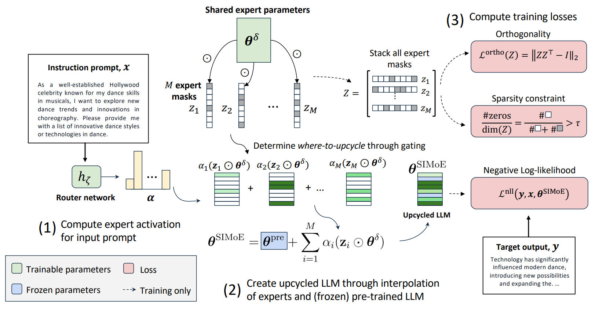
Experimental Results
Cross-task generalization performance:
SIMoE consistently achieves the strongest generalization performance across all of our experiments. SIMoE excels in cross-task generalization on the Super-NaturalInstructions benchmark,
outperforming baselines in at least 7 out of 12 unseen task categories. This results in overall average gains of 2.5% and 1.6% over Full FT for the 3B and 8B pre-trained models, respectively.
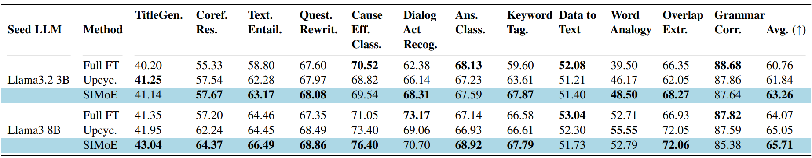
SIMoE demonstrates strong generalization performance when transferring to a larger pre-trained model and a relatively larger instruction fine-tuning dataset,i.e., the Tülu-v3.
SIMoE maintains its competitive edge, surpassing all baseline methods on average over 12 common LLM evaluation benchmarks, with a noticeable improvement of 0.6% over the official Tülu-v3-8B-SFT model –
the recent open-source state-of-the-art.
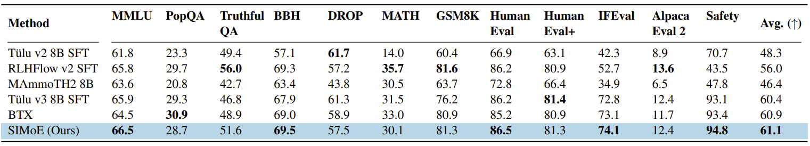
Specialized experts and orthogonality: In the left panel, we visualize the average expert activation for different tasks and notice that all experts exhibit some utilization across datasets, and hierarchical clustering
of activation similarities reveals a clear dendrogram structure aligned with task and domain relationships. In the right panel, we assess expert specialization through pairwise mask overlap ratios. The results show that experts generally have low overlaps – sharing a small number of
parameters, though domain-similar experts (according to grouping in the dendrogram) exhibit marginally higher
overlaps – for instances, maths- and code-domain experts {2,6,7}; general- and safety-domain experts {3,4}. The results demonstrate that SIMoE
is capable of identifying a balanced shared and expert-specific parameter partitions, enabling nuanced specialization while maintaining strong synergies between distinct experts.
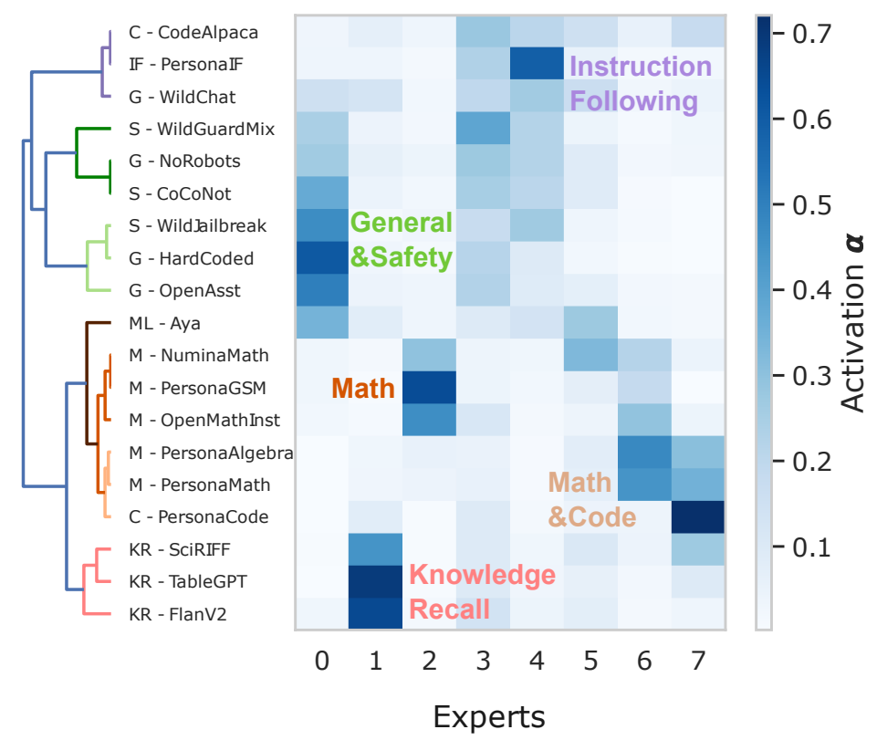
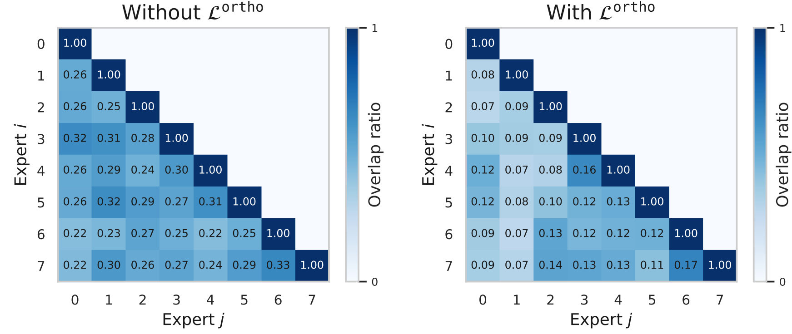
Training and inference cost:
We compare the model capacity of (1) SIMoE using M = 8 upcycled sparse interpolated experts at each linear layer, and (2) Sparse upcycling
with 4 experts at each FNN block and Top-2 expert routing. Thanks to the proposed learnable, structured sparsity masks in combination with expert parameter sharing, our method significantly reduces
model size during training, immediately providing a substantial reduction in peak GPU memory usage. Furthermore, by targeting a final sparsity of 75% in upcycled experts, our model achieves an smaller inference size, with approximately 30% fewer parameters compared to the number of active parameters per forward-pass in a upcycled SMoE model.
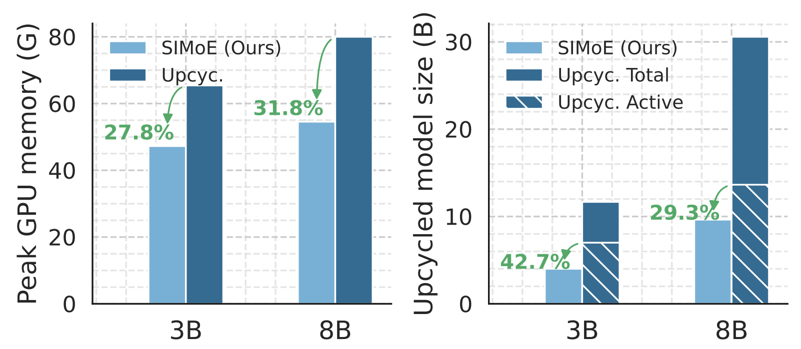
Learned sparse upcycling patterns:
We visualize the distribution of non-zero experts in the upcycled LLM learned by SIMoE from instruction-tuning. Several key observations
emerge. First, as shown in panel (right), upcycling primarily occurs in the shallow and intermediate
Transformer layers, with significantly reduced activity in deeper layers. Second, panel (left) reveals that non-negligible upcycling manifests across all
layer types, though with distinct intensity: layer normalization parameters exhibit the highest proportion of upcycled (non-zero) expert parameters, while the gate layer in the FNN demonstrates the lowest. Key, value, and output matrices in the attention block maintain a noticeably higher fraction
of non-zero parameters than query weights, aligning with prior work that identified these matrices as crucial for knowledge injection and model editing.
Notably, the learned upcycling pattern by SIMoE, which achieves the best empirical performance, diverges substantially from manually prescribed strategies (e.g., upcycle FFN only), underscoring the critical advantage of data-driven approaches for determining where-to-upcycle.
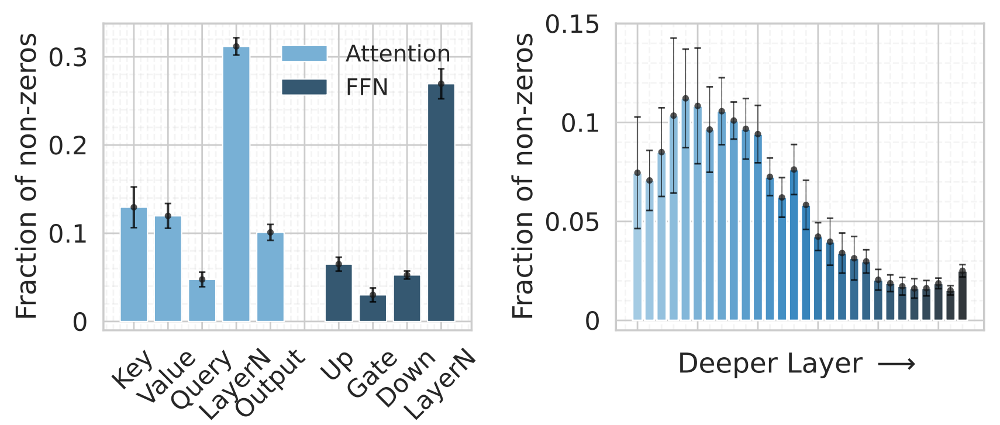
Citation
@inproceedings{chen-etal-2025-automatic,
title={Automatic Expert Discovery in LLM Upcycling via Sparse Interpolated Mixture-of-Experts},
author={Shengzhuang Chen and Ying Wei and Jonathan Richard Schwarz},
booktitle={Proceedings of the 63rd Annual Meeting of the Association for Computational Linguistics},
year={2025},
url={https://arxiv.org/abs/2506.12597}
}